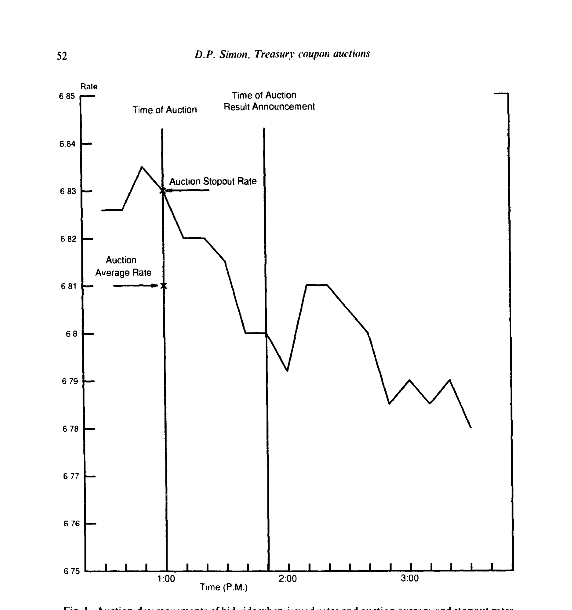
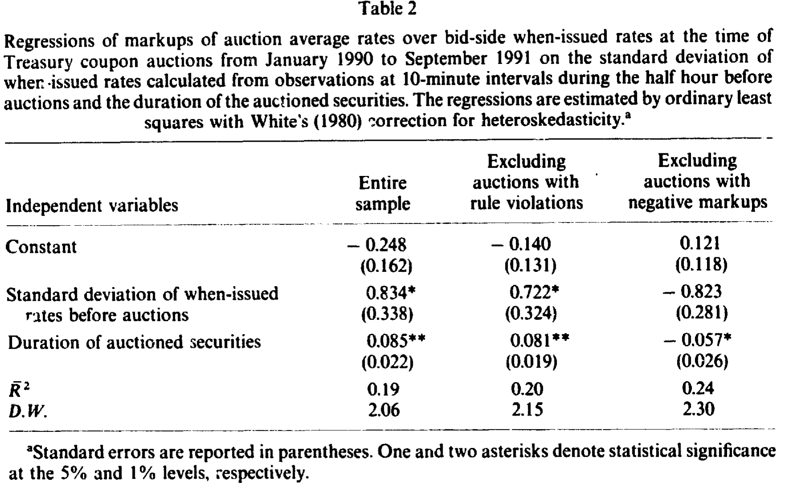
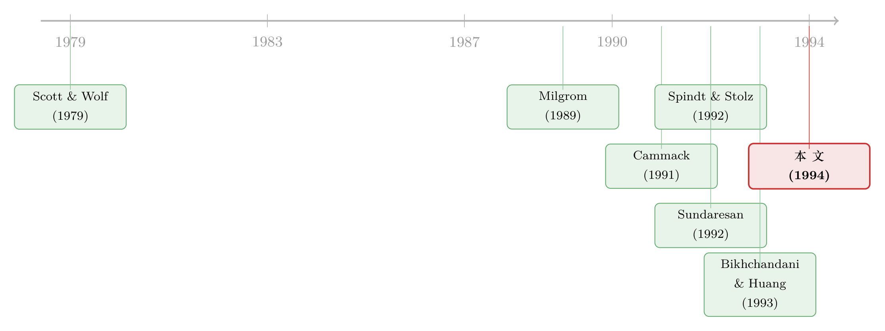

国债拍卖桌上的两种恐惧：赢家的诅咒，与输家的噩梦
本文读的是 Simon (1994, Journal of Financial Economics)：用 1990–1991 年 66 场美国国债付息债券（coupon）拍卖的日内 when-issued 报价，作者发现拍卖成交利率对发行前市场利率的「加价」（markup）平均只有 3/8 个基点，小得和买卖价差差不多；更要紧的是，when-issued 利率在拍卖结果公布之前就已经对投标的激进程度做出了和公布之后一样强的反应——这说明有人提前知道了大家投得多狠。一句话：在国债拍卖里，「数量风险」和「赢家的诅咒」一样重要。
1 一个被教科书忽略的恐惧
先讲一个常识。任何参加拍卖的人都会怕一件事：赢家的诅咒（winner's curse）。你出的价比所有人都「好」（在国债拍卖里，就是你报的利率最低），于是你中标了——可正因为你比所有人都激进，你多半是出价过头的那个倒霉蛋。理性的投标人懂这个道理，于是会主动留一手：不确定性越大，越要把利率往上报一点，免得自己成为那个「赢得太多」的人。这是 Milgrom (1989) 在拍卖理论里讲得很清楚的逻辑。
如果故事到此为止，那国债拍卖研究就只是把这套理论搬到债券上验一遍。事实上早期的几篇文献正是这么做的：Cammack (1991)、Spindt and Stolz (1992)、Bikhchandani and Huang (1993) 都在研究国库券（Treasury bill）拍卖的成交利率比 when-issued 市场利率高出多少，以及这个「加价」是不是在不确定性更高时变得更大。它们的答案高度一致：加价确实存在，且随不确定性上升——和赢家的诅咒完全对得上。
但这里有一个被整套逻辑悄悄漏掉的角色。
赢家的诅咒，是中标者的烦恼。可拍卖桌上还坐着另一种人，他们怕的恰恰相反——他们怕没中标。这就是本文要请回到聚光灯下的主角：数量风险（quantity risk）。
2 谁在怕「没买到」？——交易商与「输家的噩梦」
为什么有人会怕买不到？对一个想长期持有的投资者来说，没在拍卖里拿到债券，无非是去 when-issued 市场上买，顶多多付一点点价差，无伤大雅。
真正命悬一线的是一级交易商（primary dealers）。这件事的制度背景值得说清楚：交易商在进拍卖场之前，手里往往已经攒了大量净空头——他们替那些不愿亲自下场投标的客户做了中介，承诺将来交付债券，于是先在 when-issued 市场上卖空，等着用拍卖中标的券去补。本文引用的《政府证券市场联合报告》给出了惊人的数字：在作者研究的这 66 场拍卖里，一级交易商拿走了竞争性投标中标量的 95%；而拍卖前一天收盘时，一级交易商在 when-issued 券上的净空头平均高达其自营中标量的 40%。
于是问题来了：如果一个交易商没在拍卖里中标，他必须回到 when-issued 市场去补空头——而此时这个市场如果因为别人投得太凶正在上涨（利率在跌、价格在涨），他就得高位接盘。市场里有个很形象的名字，叫 输家的噩梦（loser's nightmare）。
现在，张力出现了。赢家的诅咒让你想少投一点、报高一点利率；数量风险却让你想多投一点、报低一点利率以确保拿到券。同一个交易商，被两种相反的恐惧同时拉扯。本文的核心问题，正是去丈量这两种力量的相对大小——而这，是只盯着「加价随不确定性上升」的早期文献从未触及的一面。
（顺带一提，交易商如何在拍卖前后管理这一大笔空头与多头，本身就是一条研究主线，可参见《国债拍卖的「接盘人」：一级交易商如何吞下、扛住、再卖出一波又一波供给》。）
3 数据：把 when-issued 市场的每一次心跳记下来
要量这两种恐惧，先得有一把足够细的尺子。
本文最大的本钱，是来自 Cantor Fitzgerald 交易屏的日内 when-issued 报价——Stigum (1990) 称它是美国政府债券经纪市场份额最大的经纪商。数据是一份按时间顺序记录的、所有在屏幕上挂出过的最优买卖报价（最低 bid、最高 ask），精确到挂出的时刻和有效的金额（通常 100 万到 2000 万美元）。拍卖结果则来自财政部新闻稿，公布时间精确到分钟（来自 Telerate）。
- 观测单位：单场拍卖；
- 样本：1990 年 1 月至 1991 年 9 月的 66 场国债付息债券拍卖（2、4、5、7、10 年期票据与 30 年期债券）；
- 关键时点：拍卖在下午 1 点举行，结果在 3:30（前半段样本）或 2:00（后半段）公布——中间这段长达一两个小时的「黑箱期」，是全文的戏眼。
为什么黑箱期是戏眼？因为在这段时间里，竞争性投标人不知道自己中没中标，也就不知道自己到底暴露在多大的利率波动里。而有些人——通过拍卖后交易商之间互通消息（information sharing），或者干脆是逼空（squeeze）的策划者——可能比别人更早知道「这场投得有多凶」。
4 第一个发现：加价小得可怜，只有 3/8 个基点
先看最朴素的事实。
对一个在边际上靠卖空建仓的交易商来说，相关的「加价」是拍卖成交利率（平均成交利率、以及 stopout 即最高中标利率）减去bid 侧 when-issued 利率——因为空头是在买卖价差的 bid 一侧立即建立的。结果是：
- 平均成交利率比 bid 侧 when-issued 利率高 0.37 个基点（标准误 0.08，1% 显著）；
- stopout 利率比 bid 侧高 1.07 个基点（标准误 0.18）——这 1.07 里有 0.7 个基点是「尾巴」（tail，即 stopout 减平均成交利率）撑起来的；
- 对长期投资者而言，相关的是成交利率减 ask 侧 when-issued 利率（因为他们可以立刻在 ask 侧买入），平均成交与 stopout 分别高出 0.75 和 1.45 个基点。
3/8 个基点是什么概念？作者反复强调：它和 when-issued 市场本身的买卖价差（拍卖时刻约 0.39 个基点）是同一个数量级。换句话说，国债拍卖几乎没有给中标者留下什么「免费午餐」——这和国库券文献里动辄 1—4 个基点的加价相比，小了一截（Cammack 1991 给的是收盘时约 4 个基点）。
一个容易被忽视的细节：这些加价不等于交易商的利润。因为在 stopout 利率上中标是按比例配给（prorated）的——你报了那个价，未必拿得到你想要的全部数量。利润要到第 5 节专门核算。
值得一提的是，样本里有 Salomon Brothers 自认违规的 5 场拍卖（提交未授权的客户投标、不如实报告 when-issued 头寸，从而一度突破单一投标人 35% 的上限）。剔除这些观测后，加价不降反升（如剔除规则违规后平均成交对 bid 的加价升至 0.43 个基点）——说明违规行为是在压低而非抬高加价。
5 真正关键的一步：黑箱期里，价格已经先「说」了
如果故事只到「加价很小」，那也不过是给国库券文献补一个付息债券的样本。本文真正锋利的地方，在下一个问题：
在那段一两个小时的黑箱期里，价格动了没有？
逻辑是这样的。如果拍卖里没有人握有信息优势，那么在结果公布之前，when-issued 利率就不应该系统性地随投标激进程度而动——因为大家都不知道结果。反过来，如果确实有人提前知道了投标有多凶（无论是靠交易商互通消息，还是靠自己就是逼空的一方），那么消息灵通者会抢在结果公布前就去交易，于是公布前的利率变化就会泄露出投标的激进程度。
作者把「拍卖时刻到结果公布前 5 分钟」的 bid 侧 when-issued 利率变化，回归到投标激进程度（用平均成交利率对当时 bid 侧 when-issued 利率的加价来衡量）和久期上。结果（如表 3，正文报告）很硬：加价的系数是 1.52（标准误 0.559，1% 显著）。翻译成人话——投标每激进 1 个基点（即加价下降 1 个基点），公布之前when-issued 利率就已经下行约 1.5 个基点。
把它和文首那个数字摆在一起：when-issued 市场对投标激进程度的反应，在结果公布之前和之后一样强。也就是说，等财政部把结果敲在屏幕上时，大部分信息早就被价格消化掉了。这正是「有人提前知情」的直接证据——要么是拍卖后交易商之间迅速对单子，要么是逼空者本就在主动把 when-issued 市场往上拉。

Figure I: Auction-day movements of bid-side when-issued rates and auction average and stopout rates
最戏剧性的注脚，是 1991 年 5 月 22 日那场触发了对 Salomon Brothers 调查的两年期票据拍卖（如图所示）。这场投得极凶：平均成交利率 6.81%，比拍卖时刻的 bid 侧 when-issued 利率低了整整 2 个基点，而 stopout 利率 6.83% 上只有 14% 的投标拿到了券。从拍卖到 1:52 公布结果，bid 侧 when-issued 利率已经先跌了 3 个基点到 6.80%；等结果真正公布、从公布前 5 分钟到公布后 5 分钟，利率只又动了半个基点。信息几乎全在黑箱期里走完了。逼空与挤压的机制，《拍卖桌底下的那只手：当「逼空」悄悄改写了每个人心里的价》讲得更系统。
6 加价确实随不确定性上升——但这未必是赢家的诅咒
回到那条与早期文献接轨的检验：加价是不是在不确定性更高时更大？
作者用拍卖前半小时内、每 10 分钟一次共 4 个观测算出的 bid 侧 when-issued 利率标准差来度量不确定性（其均值为 0.31 个基点），把加价回归到这个标准差和久期上，用 OLS 加 White (1980) 异方差稳健标准误。可以写成：
$$ \text{markup}_i = \alpha + \beta \cdot \text{SD}_i + \gamma \cdot \text{Duration}_i + \varepsilon_i $$
其中 \(\text{SD}_i\) 是第 \(i\) 场拍卖前半小时 when-issued 利率的标准差，\(\text{Duration}_i\) 是中标债券的（修正）久期。结果（如表 2）：
- \(\hat\beta = 0.834\)（标准误 0.338，5% 显著）——拍卖前半小时 when-issued 利率标准差每升高 1 个基点，加价升高约 0.83 个基点；
- \(\hat\gamma = 0.085\)（标准误 0.022，1% 显著）——久期每增加 1 年，加价升高约 0.08 个基点；
- \(R^2 = 0.19\)。

Table 2
表面上，这和赢家的诅咒完全吻合：不确定性越大，越要报高利率以避免「赢得太多」。但作者很克制地指出了一个观测等价的解释——这同样可能是数量风险在起作用。不确定性越大，黑箱期内 when-issued 利率越可能剧烈波动，而此时竞争性投标人既不知道自己中没中标、又面对着信息不对称，于是要求更高的加价作为补偿。两套故事都能解释这条正斜率。这正是为什么前一节那个「价格抢跑」的证据如此重要：它不是靠加价的横截面去间接推断，而是直接抓到了信息优势存在的痕迹，从而把「数量风险与信息不对称」这一侧坐实。
也正因如此，作者才敢在摘要里下那句判断：数量风险和赢家的诅咒一样重要。它不是被「加价随不确定性上升」单独证明的，而是被「价格在黑箱期里抢跑」补全的另一半。
7 文献脉络
这条线的起点，是把现代拍卖理论的直觉搬进国债市场的尝试。Scott and Wolf (1979) 早早讨论了国库券拍卖里投标的「有效分散」问题；而 Milgrom (1989) 那篇拍卖理论入门，则给出了「不确定性↑ → 投标更保守 → 加价↑」的标准预测。
接着，一批实证研究把镜头对准了国库券拍卖的加价：Cammack (1991, JPE) 用 1973–1984 年的收盘数据，发现平均成交利率比 when-issued 中点高约 4 个基点；Spindt and Stolz (1992, JBF) 把时点提前到拍卖前半小时，得到不到 1.5 个基点；Bikhchandani and Huang (1993) 则报告约 1 个基点。它们共同确立了「加价存在、且随不确定性上升」的事实，但都没有考虑那些没中标者面对的数量风险。Sundaresan (1992) 对国债拍卖与期限结构的实证分析，则从另一侧丰富了这条线。

本文（Simon, 1994）的位置就清楚了：它第一次把研究对象从国库券换成付息债券，用日内报价把黑箱期切开，并且把一个被整套赢家诅咒叙事漏掉的角色——数量风险与「输家的噩梦」——请回到了分析的正中央。它和后来一系列研究交易商资产负债表、拍卖中投标行为的工作一脉相承（例如《拍卖室里的暗账：当交易商把国债卖给央行，谁赚走了那点「流动性红利」？》）。
8 评论与延伸（Q&A + 研究方向）
(a) 几个可能的疑问
Q：3/8 个基点的加价这么小，是不是说明国债拍卖「很有效率」、没什么可研究的？
恰恰相反。加价小，意味着拍卖几乎没给中标者留利润空间，这本身就是个需要解释的均衡——是激烈竞争压平了它，还是数量风险逼着大家把利率报得更低？而且「平均加价小」掩盖了横截面上的巨大差异（从 -2 个基点到正的若干基点），后者才是信息真正藏身的地方。
Q：为什么用 when-issued 利率作基准，而不是直接比拍卖前后的二级市场价格？
因为 when-issued 市场是拍卖的直接替代品：买 when-issued 券和去拍卖投标，是同一笔现金流的两种买法。两者唯一的实质差别就是拍卖多了「数量风险」（可能不中标）和「赢家的诅咒」。用 when-issued 利率作基准，等于把其他因素差掉，让加价干净地承载这两种风险的价格。
Q：「价格在结果公布前就抢跑」，会不会只是公开信息（比如同时段的宏观数据）在驱动，而非投标信息泄露？
这是最值得担心的识别威胁。作者的辩护是：被解释变量是「与投标激进程度的相关」，而投标激进程度（加价）本身是私有信息，公开宏观消息没有理由与它系统相关。1991 年 5 月 22 日那场——利率在公布前抢跑 3 个基点、公布后只动半个基点——也很难用普通宏观新闻解释。但严格说，作者无法完全排除某些与投标相关的公开信息，这是观测数据的固有局限。
Q：加价随不确定性上升，到底算赢家的诅咒还是数量风险的证据？
单看这条正斜率，两者观测等价，无法区分。本文的高明之处是不靠它来支持数量风险，而是用「黑箱期价格抢跑」这条独立证据去坐实信息不对称那一侧。把两块证据拼起来，才得出「数量风险与赢家诅咒同等重要」的结论。
Q：Salomon 的违规会不会污染整个样本？
作者做了剔除检验：剔除 5 场自认违规的拍卖后，加价不降反升（0.37→0.43 个基点），公布后的价差略有收窄。这说明违规是在压低而非制造加价，主结论稳健。当然，违规拍卖恰恰是逼空与信息优势最极端的样本，把它们单独拿出来看反而最有信息量（如 5 月 22 日那场）。
Q：这对今天（统一价格拍卖时代）还有意义吗？
本文样本处在多重价格（discriminatory）拍卖向统一价格（uniform-price）拍卖过渡之前。规则变了，赢家诅咒与数量风险的相对权重也会变。但「没中标者面对的数量风险是一种被定价的风险」这个洞见是跨规则的——它在任何「先卖空、再靠拍卖补」的市场结构里都成立。
(b) 几个可能的研究问题与提案
1. 把数量风险的「价格」结构化估出来。 【经济故事】本文证明了数量风险重要，但没给它一个独立于赢家诅咒的点估计。能不能写一个交易商在「赢家诅咒 vs 输家噩梦」之间权衡的结构投标模型，从日内 when-issued 报价和中标数据里把两种风险的相对价格分别识别出来？ 【可行性】中。需要带时间戳的投标层面数据（理想情况），或退而求其次用日内 when-issued 报价 + 拍卖结果做矩条件估计。识别靠的是「中标概率」与「报价」之间的结构关系，doable 但对数据精度要求高。
2. 用统一价格拍卖改革做一次干净的前后对比。 【经济故事】1992 年后美国国债逐步转向统一价格拍卖。理论预测统一价格会削弱赢家的诅咒（你按 stopout 付钱，不必怕「赢得太多」）。那么数量风险的相对重要性是否随之上升？黑箱期的价格抢跑是否变弱？ 【可行性】高。这是一个现成的政策断点，可用双重差分（difference-in-differences, DiD）或事件研究比较改革前后同一期限债券的加价与黑箱期价格反应。数据（拍卖结果 + when-issued 报价）公开可得。
3. 把这套「黑箱期抢跑」检验搬到公司债与信用市场。 【经济故事】公司债发行也有类似的「发行前灰色市场（gray market）」与做市商净空头结构。在新债定价公布前，二级/灰色市场价格是否同样抢跑、泄露了配售的激进程度？这能把国债里的数量风险洞见迁移到信用市场的承销定价上。 【可行性】中。需要公司债发行的日内灰色市场报价（较难获取）与配售数据。识别思路与本文一致，但信用市场的异质性（评级、流动性）需要更多控制。可与《新债上市第一笔成交，凭什么白赚 47 个基点？》对照。
4. 外资投标人 vs 本土交易商：谁更怕数量风险？ 【经济故事】外国央行与外资机构常通过一级交易商间接投标，自身不背 when-issued 空头，因而几乎不暴露于「输家的噩梦」。如果能把投标按投标人类型拆开，是否能看到本土交易商的报价系统性地更激进（更怕没买到）？ 【可行性】中偏低。核心难点是拿到投标人身份层面的数据，通常需监管渠道。一旦有数据，识别相当直接——比较不同类型投标人在同一场拍卖里的报价分布即可。
我的判断
贡献。 这篇论文的价值不在某个惊人的系数，而在它重新框定了问题：国债拍卖不是一个只有「赢家诅咒」的单边故事，而是两种相反恐惧的拉锯。它用一把当时罕见的、精确到时刻的日内 when-issued 尺子，干净地抓到了「黑箱期价格抢跑」这一信息优势的直接痕迹——这比靠加价横截面去间接推断要有力得多。3/8 个基点这个数字本身，也成了后续国债拍卖效率讨论的一个基准。
对识别的担忧。 最大的软肋是观测数据的固有局限：黑箱期价格抢跑被归因于「投标信息泄露」，但无法结构性地排除与投标相关的公开信息；而「加价随不确定性上升」与赢家诅咒、数量风险两者都相容，本文只能靠拼接两块证据来侧面支持数量风险，而非直接把它从赢家诅咒里点估计地剥离出来。样本只有 66 场、且横跨拍卖规则与公布时点的变化，也限制了精度。
后续想看到什么。 我最想看到的，是一个能把「赢家诅咒的价格」与「数量风险的价格」分别报出数字的结构模型，以及统一价格改革前后的一次干净对比——后者几乎是为检验本文核心论点量身定做的自然实验。把这套思路迁移到公司债与外资投标人，则是它在信用市场与跨境流动性方向上最自然的延伸。
参考文献
Bikhchandani, S. and C.-F. Huang (1993). The Treasury bill auction and the when-issued market: Some evidence. Working paper, MidAmerica Institute, Chicago, IL.
Cammack, E. B. (1991). Evidence on bidding strategies and the information in Treasury bill auctions. Journal of Political Economy 99(1), 100–130.
Copeland, T. and D. Galai (1983). Information effects of the bid-ask spread. Journal of Finance 38(5), 1457–1469.
Glosten, L. R. and P. R. Milgrom (1985). Bid, ask and transaction prices in a specialist market with heterogeneously informed traders. Journal of Financial Economics 14(1), 71–100.
Milgrom, P. R. (1989). Auctions and bidding: A primer. Journal of Economic Perspectives 3(3), 3–22.
Scott, J. H. and C. Wolf (1979). The efficient diversification of bids in Treasury bill auctions. Review of Economics and Statistics 61(2), 280–287.
Simon, D. P. (1994). Markups, quantity risk, and bidding strategies at Treasury coupon auctions. Journal of Financial Economics 35(1), 41–62.
Spindt, P. A. and R. W. Stolz (1992). Are US Treasury bills underpriced in the primary market? Journal of Banking and Finance 16(5), 891–908.
Sundaresan, S. (1992). An empirical analysis of U.S. Treasury auctions: Implications for auction and term structure theories. Working paper, Columbia University, New York, NY.
White, H. (1980). A heteroskedasticity-consistent covariance matrix estimator and direct tests for heteroskedasticity. Econometrica 48(4), 817–838.